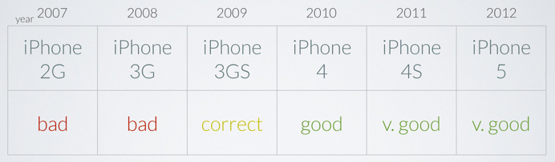
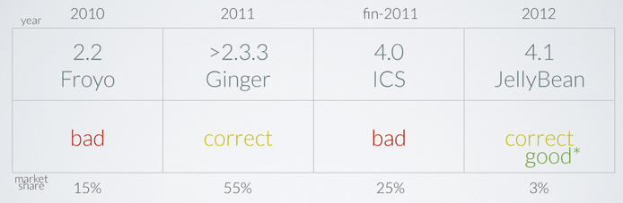
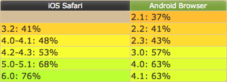

Dev natif vs dev hybride
- Caractéristiques : dev natif et hybride
- Problèmes rencontrés
- Quels axes d'améliorations?
- Que choisir ?
Dev natif vs dev hybride
- Caractéristiques : dev natif et hybride
- Problèmes rencontrés
- Quels axes d'améliorations?
- Que choisir ?
Caractéristiques (1/2)
Natif :
- Chaque OS porte ses propres conventions ergonomiques
- Permet de maximiser l'expérience utilisateur
- Les coûts peuvent devenir important si on doit développer pour plusieurs plateformes.
Caractéristiques (2/2)
Hybride :
- Porte la promesse de réutiliser tout ou partie du code entre les différents OS.
- De multiple solutions techniques existes (Angular, Backbone, Zepto, JQuery..)
- Plus la vue est compliquée, plus son temps de développement se rapproche du natif. Mais on mutualise.
Dev natif vs dev hybride
- Caractéristiques : dev natif et hybride
- Problèmes rencontrés
- Quels axes d'améliorations?
- Que choisir ?
Problèmes rencontrés
- Application iOS
- Application hybride
- Problèmes communs
Application iOS (1/3)
- Prise en main du langage : seul l'expérience ou une formation adéquate permet d'utiliser les conventions adaptées.
- Le langage évolue rapidement, penser à un choix viable pour le futur.
- Problématique de l'achat in-app : il faut rentrer dans le moule Apple.
Application iOS (2/3)
- Validation Apple : prévoir un délai conséquent, en cas de refus il faut s'adapter à leur langage, tout est policé.
- Taille et temps de réponse de l'appli : suivre les bonnes pratiques et minimiser l'utilisation des images pour la construction de l'interface.
Application iOS (3/3)
- Attention aux scroll horizontal : ne charger que quelques élements
- Faire de la veille en suivant les WWDC : astuces, nouveautés
Problèmes rencontrés
- Application iOS
- Application hybride
- Problèmes communs
Application hybride (1/5)
- Bien choisir ses frameworks en fonction de son utilisation et de son équipe.
- Attention à l'utilisation multiplateforme de PhoneGap : éviter de charger cordova.js à chaud.
- Une interface pensée en natif peut ne pas correspondre à une interface HTML5.
Application hybride (2/5)
- Problème avec PhoneGap pour lire les vidéos Youtube.
- Penser aux transitions entre les pages, mais penser aussi à tester sur les devices cibles!
- Utilisation de plugins PhoneGap pour l'achat in-app et la publicité.
Application hybride (3/5)
Performances webview/Sencha Touch 2:

Source : Meetup PhoneGap Olivier Louvignes
Application hybride (4/5)
Performances webview/Sencha Touch 2:

Source : Meetup PhoneGap Olivier Louvignes
Application hybride (5/5)
Différence de support HTML5/CSS/JS/SVG:

Source : Can I use...
Problèmes rencontrés
- Application iOS
- Application hybride
- Problèmes communs
Problèmes communs
- Gestion des images: tailles et pixel ratio -> service adapté à notre besoin
- Utilisation de cache client et serveur
Dev natif vs dev hybride
- Caractéristiques : dev natif et hybride
- Problèmes rencontrés
- Quels axes d'améliorations?
- Que choisir ?
Axes d'améliorations
- Comment améliorer l'existant?
- Est-il possible d'améliorer le rapport expérience utilisateur / coûts ?
Axes d'améliorations
Comment améliorer l'existant?
- Améliorer l'architecture de l'application web : pistes possibles dans le livre CSS Maintenables
- Utiliser un framework MVC plus adapté.
Axes d'améliorations
Comment améliorer l'existant?
- Améliorer l'architecture de l'application web : pistes possibles dans le livre CSS Maintenables
- Utiliser un framework MVC plus adapté.
Axes d'améliorations
- Comment améliorer l'existant?
- Est-il possible d'améliorer le rapport expérience utilisateur / coûts ?
Axes d'améliorations : expérience utilisateur / coûts
Différentes visions possibles :
- Tout natif : améliorer sa productivité
- Avoir une interface hybride HTML/native
- Avoir un code métier "cross plateform"
Source : intérprétation très personnelle d'un article de Martin Fowler.
Axes d'améliorations : améliorer sa productivité
Axes d'améliorations : expérience utilisateur / coûts
Différentes visions possibles :
- Tout natif : améliorer sa productivité
- Avoir une interface hybride HTML/native
- Avoir un code métier "cross plateform"
Source : intérprétation très personnelle d'un article de Martin Fowler.
Axes d'améliorations : interface hybride
Smashing Magazine :
So, write once, run anywhere is a dangerous myth. Cross-platform applications that compete successfully are write once, optimize everywhere.
Axes d'améliorations : interface hybride
Une interface purement web n'aura jamais la même ergonomie qu'une interface native.
Comment améliorer l'intégration de l'app dans l'OS et l'expérience utilisateur ?
Axes d'améliorations : interface hybride
- Utiliser avec parcimonie les élements d'interface HTML.
- Utiliser différents plugins PhoneGap pour représenter les différents paradigme UI selon l'OS :
ActionSheet
- Jongler entre les Webview (sans les multiplier) pour pouvoir utiliser les composants de navigation natifs.
Axes d'améliorations : expérience utilisateur / coûts
Différentes visions possibles :
- Tout natif : améliorer sa productivité
- Avoir une interface hybride HTML/native
- Avoir un code métier "cross plateform"
Source : intérprétation très personnelle d'un article de Martin Fowler.
Axes d'améliorations : code métier "cross plateform"
Titanium (dev JS, génération code natif) :
- Le code est généré: comment l'optimiser?
- Au niveau des fonctionnalités : + petit dénominateur commun
- Accès aux dernières fonctionnalités natives ?
Axes d'améliorations : code métier "cross plateform"
Solution naissante : Calatrava
- Code métier en JS.
- Permet aussi de mélanger interface native et HTML.
- Pour les apps ayant un code métier complexe.
Axes d'améliorations : code métier "cross plateform"
Pour une solution "maison" on peut aussi utilisé la
technique
employée par cocos2d (binding API native vers JS).
- Pour les apps ayant un code métier complexe.
Dev natif vs dev hybride
- Caractéristiques : dev natif et hybride
- Problèmes rencontrés
- Quels axes d'améliorations?
- Que choisir ?
Que choisir ?
- Ne pas oublier les guidlines
- Quelques pistes
Guidelines
Viser l'excellence...
Remember that there are already too many things out there. We don’t need more things. We need things that work better.
Guidelines
Pour les utilisateurs...
The worst thing you could do, of course, is disrespect all of your users by creating a lowest-common-denominator application that gives every user on every platform an unoptimized user experience.
Guidelines
Dans la culture de son OS!
NATIVE IS NOT NECESSARILY BETTER, BUT IT IS NATIVE. The only way to create applications that conform to the norms — that is, the culture and language — of a given platform is to use native technologies.
Que choisir ?
- Ne pas oublier les guidlines
- Quelques pistes
Quelques pistes
Les applications hybrides peuvent être plus appropriées pour :
- Les applications centrées sur leur contenu
- Les applications utilisant peu d'éléments graphiques natif (jeux, ebook..)
- Attention, on peut être contraint par des problèmes de performances ou d'UI spécifique.
Quelques pistes
Les applications natives peuvent être plus appropriées pour :
- Les applications centrées sur le comportement : l'utilisateur produit du contenu.
- Les applications necessitant des composants natifs spécifiques (paiement, élément UI)
- Les applications voulant fournir une expérience utilisateur optimisée.
Quelques pistes
Les web app / sites dédiés / sites adaptés (responsive) peuvent être plus appropriés pour :
- Les sites voulant couvrir un maximum de population (e-commerce, réseaux sociaux) : attention à leurs optimisations sur les différentes plateformes!